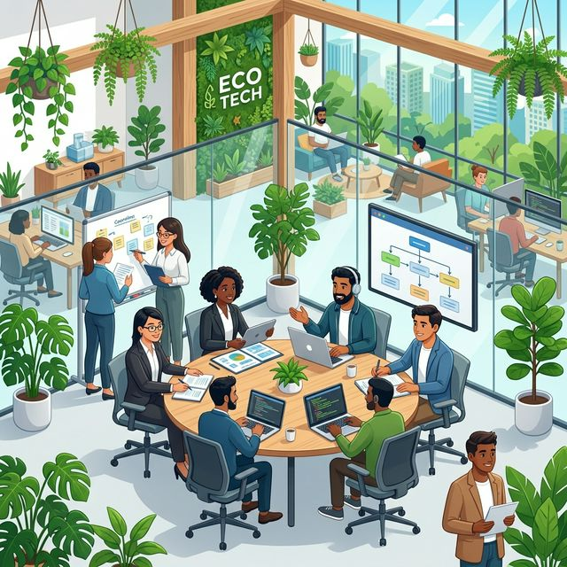

Identificación de los agentes implicados en nuestra ecosfera tecnológica (Stakeholders) y nuestra respuesta a sus necesidades.

Descripción: Empresas de telecomunicaciones, administraciones públicas, sector educativo y corporaciones privadas con alta demanda digital.
¿Qué esperan de nosotros?: Soluciones estables, seguras y protegidas, desarrolladas con código eficiente que reduzca la carga de sus servidores y apoye a sus propios balances de Responsabilidad Social Corporativa (RSC).
Descripción: Desarrolladores web, ingenieros cloud, especialistas en sistemas, personal de soporte y administración.
¿Qué esperan de nosotros?: Estabilidad laboral, salarios justos acorde al mercado tech, conciliación laboral con teletrabajo flexible, formación constante en nuevas tecnologías, condiciones igualitarias y un ambiente laboral seguro y diverso.
Descripción: Distribuidores de hardware informático (servidores, portátiles, switches), proveedores de Internet y servicios Cloud externos (AWS, Azure, etc.).
¿Qué esperan de nosotros?: Relaciones comerciales a largo plazo, pagos transparentes y alianzas donde primen estándares éticos y de bajo impacto (compras "verdes").
Descripción: Gobierno central, administraciones autonómicas de la Junta de Andalucía y los ciudadanos de Granada.
¿Qué esperan de nosotros?: Cumplimiento estricto con las normativas locales y medioambientales, creación de riqueza en la región y promoción de conocimiento libre o tecnológico (Open Source) para la comunidad.